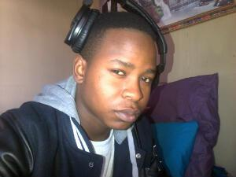
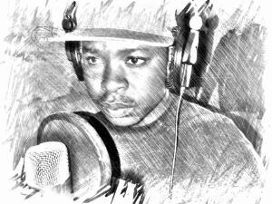

Meet Maneza F8
PERSONAL: Maneza was Given life by his mother Nothini Mabetshe and his father Mkhanyiseli Ntshoza in the late 80s, He was born and raised in Khayelitsha till He was about 6 years when Him and His family started to move around in Khayelitsha from Site-B, C-section, M-section till they end up in Philippi. From Philippi He also went to stay at Eastern Cape for few years at about the age of 8, then went back to Philippi, Cape town.
STREET-LIFE: While moving up and down in the streets of Cape town it was not easy for Him. Life in the townships is all about survival, To survive in the streets you have to learn the hard way to be strong and bold even if you think u were born weak and soft. His skills for soccer kinda made life a lot better for him because drawing up in the streets soccer was always the way to get out of the bad habits and negative things that associated with the black youth such as (Drugs, alcohol at young age, gangs etc...). Through that moving up and down He had to keep on changing schools adjusting to new people all the time, and that is not easy. He made friends. Through that but He also made enemies because living in the Hood compels you to have some friends and enemies what we refer to them as Ghosts in the streets. Through all that He was adored by older brothers in the neighborhood who were very much into Hip-Hop, So His life was always surrounded by Rap muzik in the days of Tupac, Snoop dog, LL cool j, Eminem, D12, Dr Dre, Method man and Red Man etc.. I am talking 90s where Rap was all about real life tackling real issues. That is what inspired Maneza F8 and pushed Him into the muzik direction.
MANEZA F8: Maneza maybe you ask yourself what is the word stands for anyway.
Well let me brief y'all about this name,
Maneza is the combination of His two
last-names
His mother and father's: Mabetshe and Ntshoza
Ma(Mabetshe) N (Ntshoza) E(mabEtshe) Za(Ntshoza).
Interesting heey Lol yeah it is, Okay now F8 because in South Africa or World wide we were given identity numbers His ID number got more than five Eights which is rare in the South african identities that is where the F8 is coming from again interesting right? Lol of cause it is. That is where Maneza F8 comes from.
MUZIK-LIFE: Because He was always around older guys in the streets of phillippi the love of muzik kicked in and there was NO stopping Him, He started as just writer just writing rhymes in His music Book when time goes He started putting the muzik layouts together. adding Hooks ( Chorus ) and count the bars of the verses without even knowing how many bars is He suppose to have per verse and even in the Hook but He was doing it anyway when He moved to worcester He started to Hear about guys who were busy recording and into Hip-Hop He saw them as a perfect fit for him to learn more about recording and just about anything that have to do with muzik KD was then a prodcucer at Diamond stone, where Judgement Yard was recording. Maneza would be at KD's Home during the mixing of the music and now and then during individual recordings. but no-one was willing to record Him even though He asked him number of times. until He joined a group called Zwelethemba art and culture. where there was some guys who were busy recording also Hip-hop muzik He then learn from them how to put together the FL studio petterns and lay down a track on cubase. He then find a way of getting Himself a computer tower an old 10GB hardrive computer but struggled to get the softwares because the guys at the Group did not want to give him until He went to Philippi where He got few muzik programs and started to do his own beats. He then went to the group for recording where Jentro was a producer as well as Scott T so His first track was recorded from His own beats titled Shows Love ft Jentro on a chorus. the rest is then History.